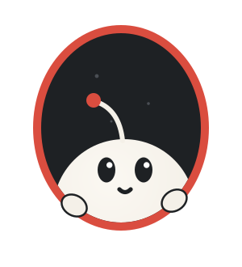

OtherSSH
No open sessions
Pick a session on the left and press Connect, or double-click it.
Or type user@host in the filter box and press Enter for a one-off connection.
Ctrl+Shift+C / Ctrl+Shift+V or right-click to copy and paste · Ctrl+Tab switch tabs · Ctrl+Shift+W close tab · Ctrl+Shift+B sidebar · Ctrl+wheel zoom · Ctrl+click opens links · right-click a tab to move it · drop files on a terminal to upload them